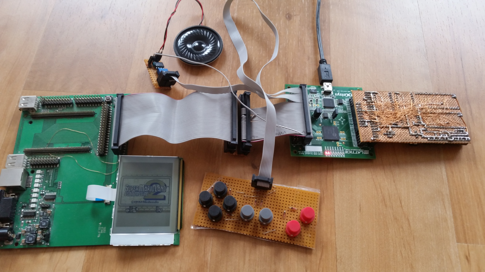
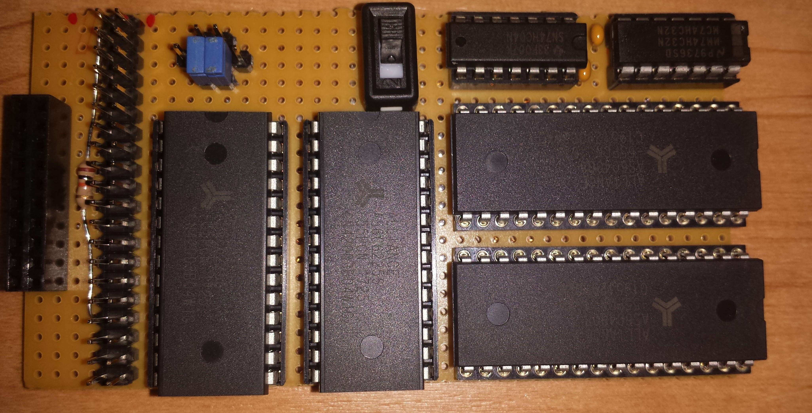

IceBoy - Game Boy clone
I did a lot of research in the past years. The FPGA implementation was done before all that research hapened. I need to fully reimplement IceBoy once I'm done figuring everything out. You can find the (now very old) IceBoy source code here:
→ IceBoy project on SourceForge
The first prototype was running on a iCE40-HX8K Breakout Board with a perfboard attached to it for memory, and an LCD display with UC1611 driver that I got with an ARM evaluation board over a decade ago.
 |
 |
{kind=link}
{kind=link}
The evaluation board on the left side is just used as an adapter to connect the pin header to the small 0.5 mm pitched connector of the LCD, and also as a power supply. The perfboard on the right side contains SRAM chips: One for the Game Boy its work RAM, one for the cartridge save game RAM (32 KiB), and two for holding a ROM file (2x512 KiB). The ROM file can be received over UART while the IceBoy is under reset. The video RAM and boot ROM are FGPA internal.
This setup was very fragile so I wanted to make my own PCB for further development. I also wanted a system for making research on the Game Boy more comfortable. I combined those two aspects into one PCB: The Game Boy reverse engineering FGPA board.
{kind=link}
I let SeeedStudio manufacture and assemble two of those PCBs. I used their PCB manufacturing services multiple times now and so far I'm very happy with their quality. The board has all the memory the Game Boy needs onboard. It has even more than the perfboard had. There's 2x1 MiB for the ROM file, 128 KiB for the cartridge RAM and I had added another RAM that has its own data and address bus, so it can be used as video RAM. There is a cartridge connector at the top, which can be used instead of loading a ROM file over UART. Just like on the real Game Boy, the cartridge connector is also sharing its data and address bus with the work RAM. The big pin header at the far left edge of the PCB can be connected to a real Game Boy using the GB-BRK-CART v4.0 adapter PCB from Gekkio. The FPGA board can act as a cartridge to the real Game Boy in this use case. On the right side there is a Game Boy Link Port and in the bottom right corner a DMG-LCD PCB can be connected with the original 21 pin flex cable, so IceBoy can drive the original LCD and also sense the buttons and use the original speaker for audio output.
The KiCad project for the board is here:
→ Game Boy reverse engineering FPGA board KiCad project
→ Game Boy reverse engineering FPGA board schematics PDF (rev 0)